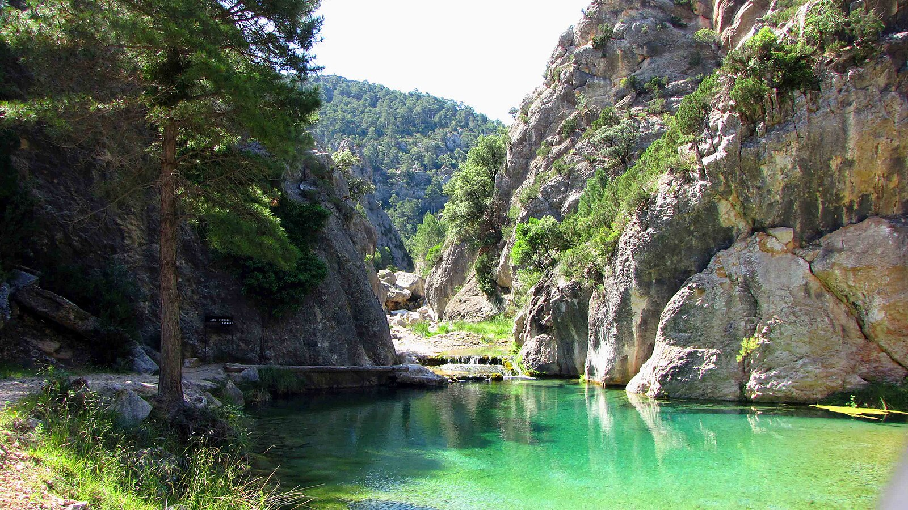

Senderismo
Rutas guiadas por los Puertos de Beceite y caminos tradicionales del Matarraña. Senderos entre bosques, ríos y miradores, adaptados a todos los niveles, con guías locales expertos que garantizan seguridad y una experiencia auténtica en plena naturaleza.